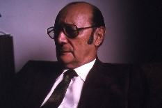

HOME FUNDEF
Luis Felipe Ramón y Rivera
Luis Felipe Ramón y Rivera

Además, en 1953 dejó creada la Orquesta Típica Nacional, la que dirigió hasta 1963 y a la cual brindó su repertorio.
...Cuando el avión levantó el vuelo sobre las playas de mi país, verdes de cocoteros y rojos en las hileras de sus casas de tejas, yo miré por primera vez en mi vida, experimenté lo que el pájaro o el condor están acostumbrados a mirar y sentir. La sensación de vuelo. Se levanta la nave, se alza sobre la hilera de piedras y oleaje de la playa, y entonces logré presenciar algo único, que no se puede ver en tierra: Bordeando la larguísima playa, sobre las aguas, yo descubrí una inmensa esmeralda que con la luz del sol irradiaba profusos y fuertes verdes, y debajo de las aguas brillaban también como gemas, piedras de verdor alucinante.Todo fue, todo me pareció entonces como un presagio, como el preludio de una vida nueva, distinta, a la de aquel niño pobre, delgadito y débil, que el San Cristóbal de 1920 vio salir un día de sus entrañas con un cargamento de música, de ilusiones y de poesía...
En 1948 Luis Felipe y yo regresamos a Buenos Aires, donde cumplimos diferentes actividades musicales. Luis Felipe se hizo director de orquesta creando un conjunto latinoamericano y escribió su primer libro sobre los Tonos de Velorio de Venezuela.
En 1952, con el regreso definitivo a la patria, se dedicó de lleno a la investigación, y a su difusión a través de la cátedra y de publicaciones.
En 1966 pudimos ampliar el horizonte con nuestra salida a Centroamérica y EE.UU. como Becarios Guggenheim y luego trabajamos en Ecuador , sentando posteriormente en Venezuela las bases del Archivo Interamericano.
Luis Felipe dirigió el INAF hasta su jubilación en 1977 y luego se dedicó a escribir con gran fruición publicando sus diferentes libros sobre música tradicional de Venezuela, trabajo que alternó con las clases que dictó hasta poco antes de morir. Estos trabajos los compartía con la composición musical, la poética y la prosa. Sus ``Memorias de un Andino'', y sus ``Pueblos tachirenses'' habla de su amor por la tierra natal; pero también le preocupan los diversos problemas sociales y culturales del país como dan cuenta de ellos sus cartas a El Nacional y numerosos escritos, incluyendo los versos de su última obra musical titulada ``Aguinaldo de la Esperanza''.
Luis Felipe amó intensamente la vida e hizo todo lo necesario para prolongarla durante su larga y penosa enfermedad.
Pero estaba claro de que
... ``Somos partículas infinitesimales del Cosmo. Estamos de paso en la tierra por un azar divino, experimentamos en ella el incomparable bien de pensar, ver, oir, sentir esta realidad vital que es nuestro paso consciente por la vida... y al llegar la muerte comprender que ese momento es necesario; que nosotros, partículas divinas pensantes provicionalmente, fulgimos y nos apegamos en un segundo, en un instante de luz semejante a aquel que en las noches profundas fulguran las luciérnagas''.
Con el pase del INAF al INCIBA continuaron las actividades con menor impulso, pero se arribó a la creación del Instituto Interamericano de Etnomusicología y Folklore (INIDEF), creación solicitada en varias reuniones internacionales y el cual obtuvo desde su creación los auspicios de la OEA. Se creó el Museo Nacional de Folklore y se fundó el Centro de Formación Técnica del Folklore (CEFORTEC) (año 1971) dependiente del Departamento de Folklore del INCIBA, del cual dependía también el INAF. Por entonces Ramón y Rivera con sus colaboradores promueve la reactivación del folklore, da impulso desde el CEFORTEC a la formación de profesores y de jóvenes investigadores y prepara un Plan Nacional de Folklore que debía ser considerado por el CONAC en formación. Además, entre 1968 y 1974 publicó la Revista Venezolana de Folklore, 2a. época, que contiene valiosas colaboraciones de especialistas de diferentes paises, y que ingresó a importantes bibliotecas del mundo.
Desde 1975, con la creación del CONAC, las actividades del INAF se reducen aún más por falta de presupuesto para las mismas. Cesa la publicación de la Revista Venezolana de Folklore y de las monografías, y las actividades posibles quedan concentradas en cursos, cursillos y conferencias.
En estas circunstancias, Ramón y Rivera prefiere pedir su jubilación y el instituto pierde su larga experiencia, que a partir de entonces vuelca en libros y en la asesoría académica del INIDEF, Instituto que lo conquistó para aprovechar sus conocimientos y vitalidad.
Cuando Ramón y Rivera deja el INAF, los informes de viaje se habían podido elevar apenas a trece (tres más que en 1965), y el archivo de cintas había llegado a 4.966 fonogramas (tenía 3.326 en 1965). Pero Ramón y Rivera deja encendida la llama de muchos jóvenes que solo esperan la oportunidad para continuar la larga y valiosa obra y quedan sentadas las bases para la implantación del folklore en la educación, llevada exitosamente a cabo durante la primera etapa, cuando el INAF dependía del Ministerio de Educación, la cual fue revivificada en el documento ``El Folklore y la Educación venezolana'', producido poco antes de salir del INAF. Deja además en marcha el proyecto para la creación de un conjunto artístico que debía denominarse ``Bailes Venezolanos'', así como el proyecto para la creación de Archivos Regionales del Folklore en las Universidades del país, proyecto que debía implementarse como se hizo en Mérida.
Los viajes de Ramón y Rivera fueron realizados casi siempre en equipo conmigo, hasta que en 1967 el INCIBA me confirmó la Dirección del Folklore Nacional de la cual dependía el INAF, y en 1971, la Dirección del Instituto Interamericano de Etnomusicología y Folklore creado a fines de 1970.
Por otra parte, al crearse los fundamentales organismos de cultura, el INCIBA primero y especialmente el CONAC después, los directivos de los mismos dieron mayor prioridad a la difusión de la cultura académica con desmedro de la cultura popular, y el INAF, que hasta 1965 era valioso apoyo del Ministerio de Educación, y que en 1971 logró todavía expandirse en el CERFOTEC y el Museo de Folklore, poco a poco empezó a carecer del presupuesto requerido, al mismo tiempo que los viajes de investigación se hicieron sumamente onerosos ( nosotros hemos viajado con 20,oo Bs diarios, en tanto ahora un investigador cuesta 240,oo Bs. por día), los directivos tenemos que mendigar las publicaciones de los trabajos, porque en tanto organismos no especializados poseen altos presupuestos para realizar toda clase de publicaciones, los institutos que debieran infundir ampliamente sus trabajos no disponen de presupuesto para ello. Tampoco hay posibilidad de reponer equipos y ni siquiera de adquirir los repuestos necesarios. Es altamente desalentador para un director de instituto, ver sus colecciones amenazadas por falta de fumigación o por falta de extractos de humedad y de control de temperatura, o por falta de equipos contra incendios.
Todo ésto explica, después de años de lucha, que un director con amplias facultades intelectuales, pida su jubilación...